6.810 Engineering Interactive Technologies (fall 2021)
Lab 6: Controlling Electroluminescent Displays
In this lab, you will create the control circuit for your electrolumiscent display so that you can turn on/off the display and even dim it to a specific brightness using your ESP microcontroller.
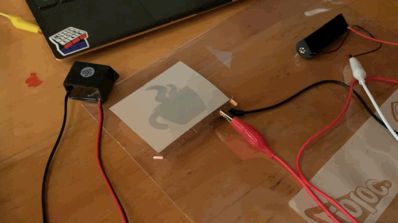
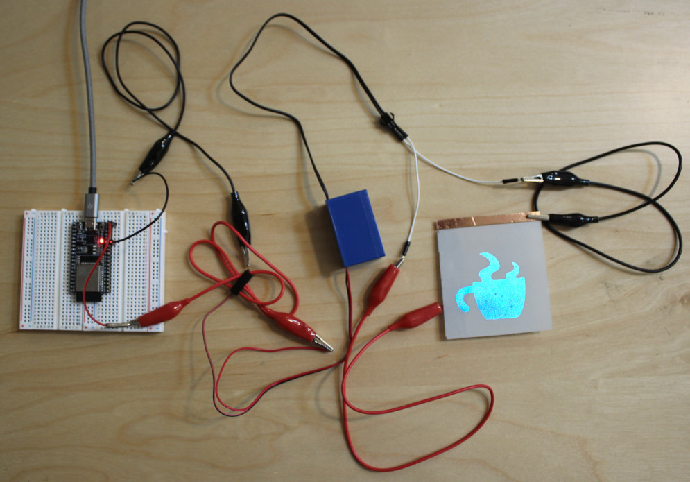
Steps:
- Safety Instructions
- Connect Inverter Output to EL Display
- Connect Inverter Input to Battery
- Power up Your Display
- Build the Control Circuit
- Write Program to Blink Display
- Write Program to Dim Display
Deliverables
At the end of the lab, upload to your student google drive:
- the Arduino code (.ino) for dimming your display
- 2-3 photos (.jpg or .png) from different angles of your circuit
- a short video (.mov or .mp4, max. 1 minute) showing how you display dims and performs a full cycle from bright to dark and dark to bright again
Help us Improve Class Materials for Lab6:
Please let us know if you had any trouble with the programming or schematic or if anything was confusing in the write up.
You can add your comments here.
(1) Safety Instructions
In this tutorial, we will generate 50V AC using an inverter. 50V AC is the maximum allowed voltage for class activities. You are not allowed to power the inverter with anything else than the 3.3V from your ESP32. Our 50V AC are low current and not dangerous, but you might feel a sensation at the tips of your fingers when touching the circuit. Therefore, never plug the display in while you are working on the circuit and you are touching the wires!
While building your circuit, you must adhere to the following rules:
- unplug the inverter
before you do any wiring, only after it is unplugged you are allowed to touch the circuit and exchange wires and components
- once you are done wiring and you have made sure you are not touching any part of the circuit anymore, plug the inverter back in
never touch the display or any part of the circuit while the inverter is plugged in, i.e. the circuit is powered
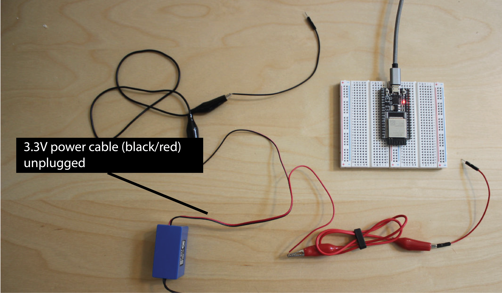
(2) Connect Inverter Output to EL Display
AC vs. DC current: EL displays require an alternating current between the two elecrodes to excite the phosphor and make it light up. Therefore, just connecting it to a DC power supply, like the 3.3V DC from your ESP32, won't do the trick. We therefore use an inverter to generate AC current from DC.
Add Jumper Wires to Inverter Output: Before you start, make sure the inverter is not connected to any power source. The inverter output is the black cable with the white connector piece on it. When you look carefully at the white connector, you will see that one of its wires is fully black while the other is black/gray. Use a black jumper wire for the black inverter cable, and a red jumper wire for the black/gray cable. As you might have already guessed, the black wire is the GND and the black/gray cable is the 50VAC signal.
Crocodile Clamp to Display Bottom Layer (copper layer with copper tape flap): Next, use a crocodile clamp to connect the black jumper wire of the inverter output to the copper side of the display, i.e. connect it to the little copper flap. Be careful that you don't rip of the copper flap while working with the wires.
Crocodile Clamp to Display Top Layer (ITO with copper tape): Next, use a second crocodile clamp to connect the red jumper wire to the top layer of the display, i.e. the ITO where there is copper tape (see below).

(3) Connect Inverter Input to the ESP32 power supply
Unplug ESP from Laptop: Next, you will connect the inverter to your ESP32. Make sure that the ESP32 is not powered, i.e., not plugged into the USB port of your PC.
Add Crocodile Clamps to Inverter Input: The inverter input is the black/red cable. Take a black and a red crocodile clamps and connect them to the inverter input.
GND Jumper Wire to ESP32: Take a black jumper wire and connect one side to the black crocodile clamp of the inverter input, and the other side of the jumper wire to a GND pin of your ESP32.
3.3V Jumper Wire to ESP32: Take a red jumper wire and connect one side to the red crocodile clamp of the inverter input, then connect the other side of the jumper wire to the 3.3V pin of your ESP32.
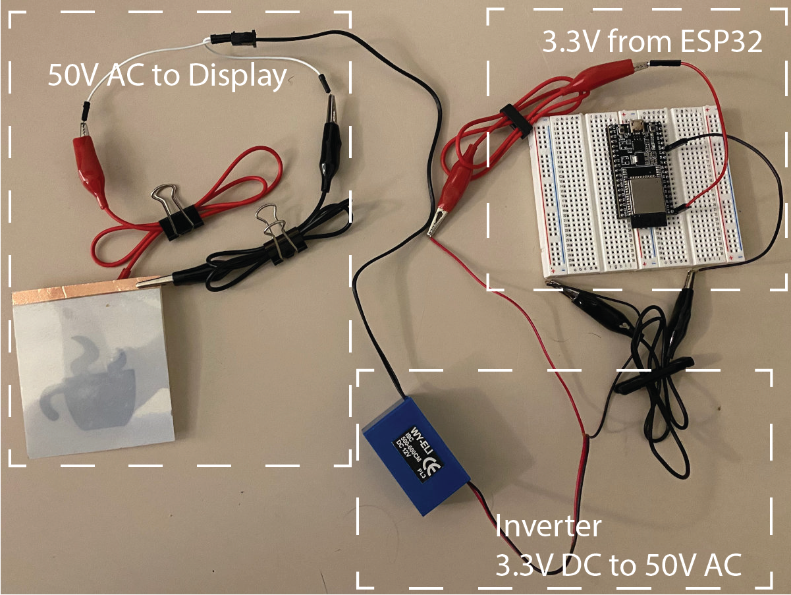
(4) Power up Your Display
Flip Display: Once you are done wiring, turn the display around such that you see the top side. The copper should be on the bottom now and you can't see it anymore.
Power your ESP32 (do not touch the circuit anymore): Before you power your ESP32, make sure you are not touching the circuit anymore at any place, do not touch the display. Then plug the USB cable into your ESP32. You should see a bright EL display in the shape of the coffee mug now.
Debugging the Display: If your display does not light up, unplug the USB cable, then check if all wires are connected properly. Before you connect the USB cable again, remember you should not touch the circuit or display.
(5) Build the Control Circuit
You already know how to turn on/off your display by plugging and unplugging the ESP32 power supply. It would be nicer to do this via code and not by physically plugging/unplugging the power supply. Thus, we will next build a control circuit that lets you do this. Below you can see an overview of the circuit, we will break it down into individual steps below.

Let's first look at the right side of the circuit diagram:
Turning On/Off the Display via a Switch (Triac): To control the EL display, you have to put a switch in between the inverter's 50V power supply and the EL display. Circuits with alternating current (AC) often use a triac to open and close the circuit.
Triacs are similar to transistors (switches) but block alternating current (AC) instead of direct current (DC). By switching the triac on/off, we can thus block the AC current coming from our inverter. This allows us to turn the display on/off computationally. The triac's pins and how you add it to a circuit is similar to a transistor (switch). It has two connectors for VCC and GND and one 'gate' that triggers if current passes through or is blocked. The 'Gate' pin should be connected to a GPIO pin on your ESP32 so you can set it either to HIGH (open gate, display is on) or LOW (close gate, display is off).
Avoiding Damage to the Microcontroller: Let's look a bit closer to what is happening on the left side of the ciruit. As you can see, the 'gate' pin of the triac is not directly going to the ESP32. Instead it connects to a component called optocoupler. Why do we need the optocoupler? The ESP32 is rated for only up to 12V. A higher voltage like the 50V AC we use for our display could potentially damage the microcontroller. Therefore, we have to isolate the ESP32 from the 50V AC power supply that drives our display. For this purpose, we have the optocoupler, which uses optical signaling rather than electrical signaling. Inside the optocoupler there is a small LED on the left side and a light sensor (photoresistor) on the right side that allow sending signals from one side to the other. Since communication is solely through light, no current of the 50V AC power supply from the display can jump over to the ESP microcontroller. Thus optocouplers allow to isolate each part of the circuit while still enabling communication between the two. All we need to do is to later send a high signal to the optocoupler to turn its internal LED on whenever we want the display to be on.
Wiring the optocoupler to the ESP: Note that the optocoupler has to be plugged in in a specific orientation. The little dot on its top indicates the top left corner of the component. Let's start wiring up the left side of the optocoupler first. As you can see in the circuit diagram above, we will wire up the top left pin on the optocoupler to a GPIO pin and the middle left pin to GND. If you send a HIGH signal from your GPIO pin, it will close the circuit and turn on the optocouplers internal LED, as you can see in the optocoupler schematic below (where it says 'Anode' and 'Cathode' these are your GPIO and GND pins and the little triangle is the LED).
Add Resistor between ESP and Optocoupler: Similar to regular LEDs, the optocoupler needs a resistor to limit the current that reaches the optocoupler's LED and prevents it from blowing up. We will use a 330ohm resistor (see circuit diagram).
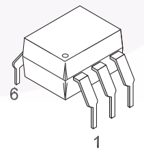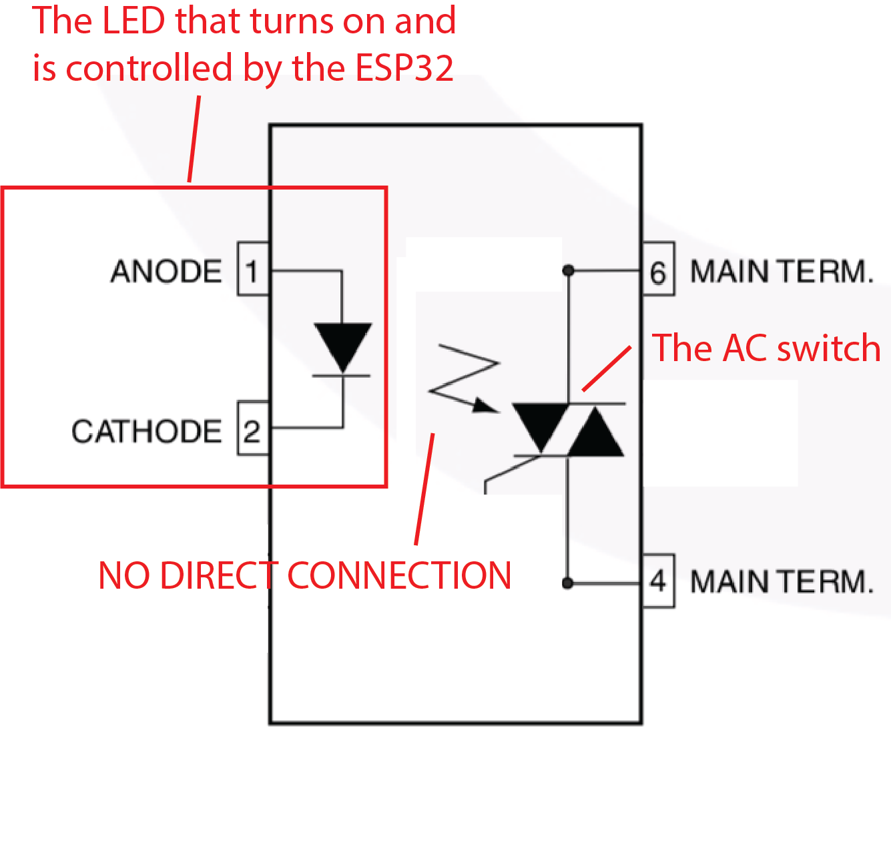 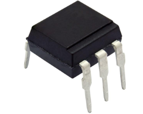
Same circuit schematic one more time so you don't have to scroll:
Wiring up the optocoupler: Next, let's wire up the right side of the optocoupler. Similar to other types of switches, the optocoupler has two pins that are wired up to the two components that should either be connected or disconnected via the switch. In our case, this would be the triac that controls the 50VAC and the EL display. Next, we will connect the 'gate' pin of the optocoupler to the 'gate' pin of the triac. We use pin 4 of the main terminal to connect to the triac's gate. This main terminal also has to get some power to have a strong enough signal to open the triac. We will get this power from the main 50V AC circuit by connecting pin 6 of the optocoupler directly to the display. In addition, we have to put a resistor between the 50V AC and the optocoupler to limit the current that can flow through the optocoupler to the gate of the triac.
Why don't we use only the optocoupler and get rid of the triac? As noted in the datasheet of the component, optocouplers are only intended to be used as a trigger device and should not drive the entire load of the circuit. Since the main purpose of an optocoupler is to protect a low-voltage device (like a microcontroller), the intention is to keep high voltages and currents far away from the optocoupler, too. An optocoupler can also break and let current through. This break voltage varies from optocoupler to optocoupler but should typically be a lot higher that the voltage of your main circuit.
(7) Write Program to Blink Display
Now that you wired up our control circuit, you are ready to write the code for it. As an example, we will write a script that lets the display blink. This is very simple with the circuit you already built.
Set Optocoupler Pin to HIGH/LOW to Blink: Connect your ESP to your laptop and create a new Arduino program. Check to which pin you connected the optocoupler, declare the pin in your Arduino code and set it to HIGH and LOW alternating whenever one second has passed.
(8) Write Program to Dim Display
Finally, we want to not just turn the display on/off but also set the displays brightness (e.g. dimming it down).
Duty Cycle: When you create a PWM signal it means that you turn on and off a signal for a certain duty cycle. The longer the signal is turned on in one duty cycle the brighter the light source will be (see Figure below). Similarly, the longer the signal is turned off in one duty cycle the darker the light source will be. Thus, a duty cycle of 25% means that the PWM signal is HIGH for 25% of the time of one cycle and LOW for the remaining 75% of the time. This results in a darker display (25% of max brightness) than a duty cycle of 75%.
Frequency: So how is the duty cycle related to the frequency? The duty cycle only tells you the percentage the signal is on/off within a cycle (e.g., 25%). It does not say how long a cycle is. For this, you need to define the frequency. A higher frequency results in a shorter overall cycle (not affecting the percentage the signal is on/off) than a lower frequency as you can see below.
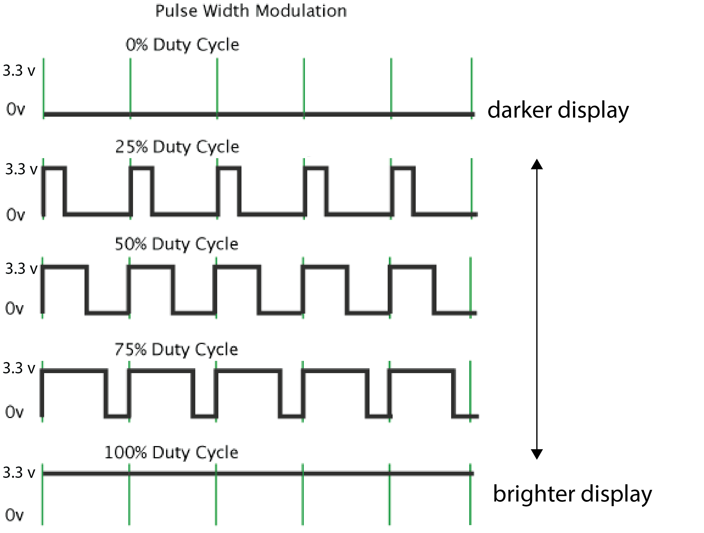 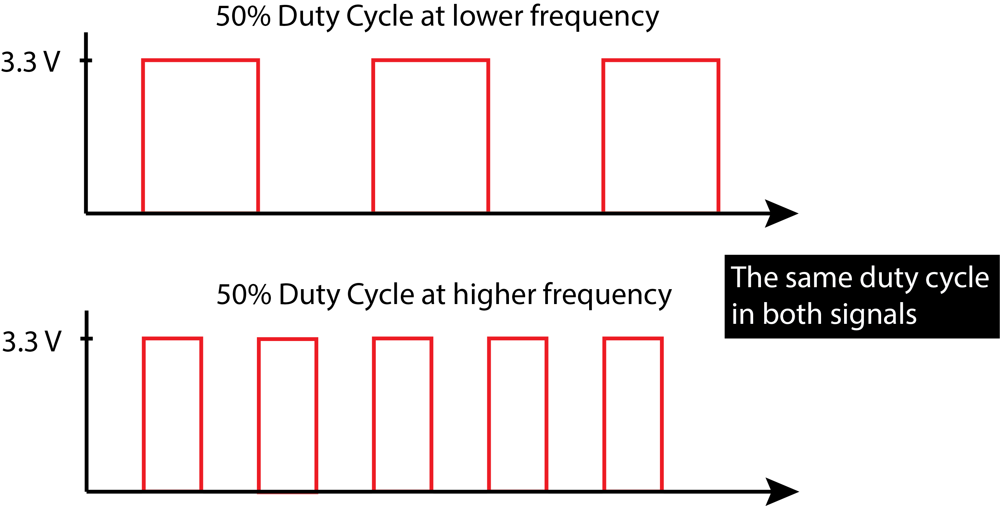
High Frequencies and the Human Eye: If the frequency is very high and thus the duty cycle is compressed into a short time window, the turning on and off of the signal (i.e. the display) happens very fast. If it is fast enough, humans do not notice that the display is turned on and off because of limitations of visual perception, which is great because we can use the on/off mechanism to create different brightness level without the user noticing that we are effectively just turning the display on/off at a very fast rate. The frequency should thus be high enough that the duty cycles are not visible to the human eye.
Why can the frequency not be arbitrarily high? We just said higher frequency, i.e. faster switching on/off, is better. The frequency, however, can not be infinitely high because of the specific setup we chose for our display circuit. We are dealing with two different signals. One signal is coming in the form of the AC signal from our inverter (frequency: 800Hz).
The other signal is coming in the form of the PWM signal from our ESP (our choice of frequency). Having the inverter frequency given at 800Hz limits our choice for the frequency of the PWM signal from the ESP because of something called 'zero crossing circuit'.
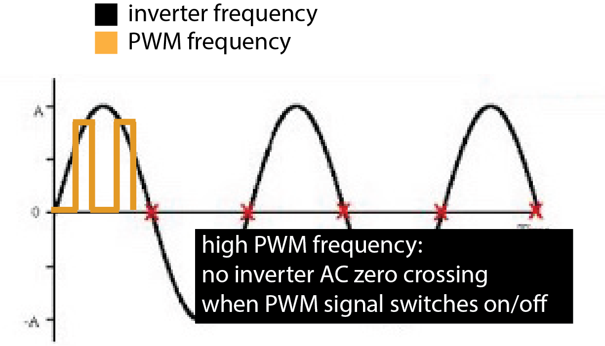
What is a zero-crossing? A zero-crossing is when the AC signal crosses the x-axis. When and how often that occurs depends on the frequency of the signal. When you check out the optocoupler's datasheet, you will see that it contains a "zero-crossing circuit". What this means is that the optocoupler will only switch the display on/off when the AC signal of the inverter crosses zero AND the PWM signal tells the optocoupler to change the display state. Both conditions have to be met at the same time to make the optocoupler switch between an on and an off state.
PWM Frequency higher than Inverter Frequency: So what happens if your PWM frequency is higher than your inverter frequency? The middle image below shows this: Although the PWM frequency demands that the display be switched off/on, the optocoupler will do nothing since there is no zero-crossing of the inverter in that time frame. Thus, if our PWM signal is faster than the inverter's AC frequency, the optocoupler switch cannot react fast enough. As a result, the optocoupler switch will react at some random point in time later, which disrupts the chosen duty cycle and makes it longer or shorter. Since the duty cycle is not consistent anymore, you will see the display flicker since it goes into random brightness states.
PWM Frequency lower than Inverter Frequency: Now let's look at the same scenario when the PWM frequency is lower than the inverter frequency. This will work well as you can see in the right image below. When the PWM frequency demands the display to be switched off/on, there are several zero-crossings where the optocoupler can take action right away. Thus, we have to select a PWM frequency that is significantly lower than the AC power supply frequency. To be significantly below the inverter's AC frequency, we should set the PWM signal to around 100Hz to get a good result in our dimming.
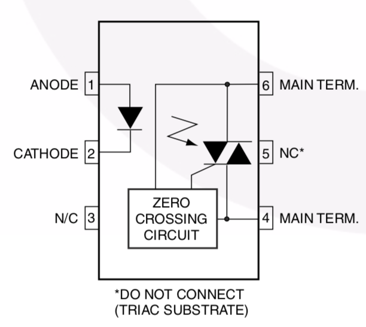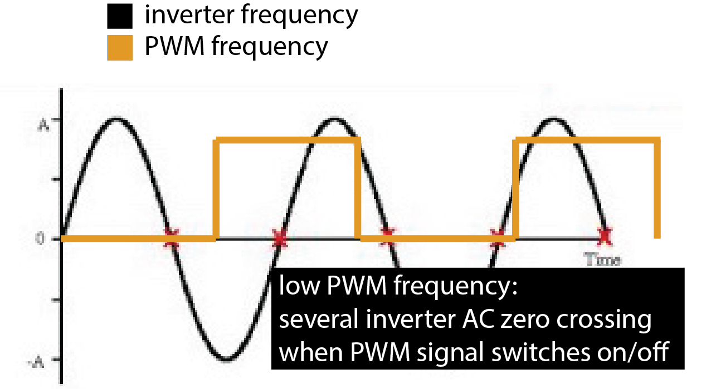
Set the PWM frequency: You can set the PWM frequency using the ledcSetup command.
ledcSetup(int ledChannel, int freq, int duty_resolution);
Channel Number: The ESP has 16 internal channels which can generate independent waveforms (note that these are NOT pin numbers on the ESP, but internal channels inside the ESP). The channel numbers range from 0-15. For our purposes, you can pick any channel you like.
Frequency: As mentioned previously, the frequency should be '100' Hz.
Duty resolution: The duty resolution is expressed in bits and determines how many different duty cycles we can choose from, i.e. how many different brightness options we will have when dimming the display. For instance, 3 bits gives us 8 different cycles to choose from (12.5%, 25%, 37.5%,... 100%).For our purposes '8' is a good choice because it gives us many different brightness levels to generate a smooth dimming.
Specify the Output Pin of the PWM Signal: Now that you specified the signal with ledcSetup(), you need to specify on which GPIO pin number of the ESP the signal should appear.
ledcAttachPin(GPIO_PIN, channel_number)
GPIO Pin: This is the pin that goes from the ESP to the display control circuit.
Channel Number: The PWM channel number is the same as above.
Generate the PWM Signal on the Output Pin: Finally, you need to generate the actual PWM signal, which you had previously defined with the ledcSetup() and ledcAttachPin() functions.
ledcWrite(channel_number, duty_cycle):
Channel Number: The PWM channel number is the same as above.
Duty Cycle: The duty cycle is different from the duty resolution. In the duty cycle parameter, you tell the ledcWrite() function, which of the duty cycles from your duty resolution should be used. Since we chose 8 bits, which gives us 255 values ranging from 0.4%, 0.8%, 1.2% .... 100%, then our duty cycle parameter is the index of the duty cycle you want to use. You can input values between 0..255 for a 8-bit resolution..
Dim the Display Repeatedly: Write a piece of code that puts the ledcWrite(channel_number, duty_cycle) function in loop() to repeatedly increase brightness from 0% to 100% within 2 seconds and then reduces the brightness down again in another 2 seconds. The display should repeat this dimming cycle infinitely.
Deliverables
At the end of the lab, upload to your student google drive:
- the Arduino code (.ino) for dimming your display
- 2-3 photos (.jpg or .png) from different angles of your circuit
- a short video (.mov or .mp4, max. 1 minute) showing how you display dims and performs a full cycle from bright to dark and dark to bright again
Please let us know if you had any trouble with the programming or schematic or if anything was confusing in the write up.
You can add your comments here.
before you do any wiring, only after it is unplugged you are allowed to touch the circuit and exchange wires and componentsnever touch the display or any part of the circuit while the inverter is plugged in, i.e. the circuit is powered